| # | OTU | NCBI nt closest match | Abundance by ENV_FEATURE |
|---|
| 1 | >emp.isme14..26.CleanUp.ReferenceOTU84852
TACGAAGGGGGCGAGCGTTATCCATCATGACTGGGCGTAA
AGGGTCTGTAGGTCGCTTTTCGTATCAAAGGTGAAAGAGT
AAAGCACAACTTTTACAAGC | HM460666.1 (86.0% sim.) | | | | ENVO:creek (98.31%) | | | ENVO:human-associated habitat (0.73%) | | | ENVO:ocean (0.48%) | | | ENVO:freshwater lake (0.24%) | | | ENVO:river (0.24%) | | | ENVO:forest soil (0.00%) | | | ENVO:oil contaminated soil (0.00%) | | | ENVO:surface soil (0.00%) |
|
|
| 2 | >emp.isme14..13.CleanUp.ReferenceOTU50340
CACCAGCGCCACAAGTGGTGGCCTAATTTATTGGGTCTAA
AGCGTCCGTAGCAGGTTTAGCAAATCTCTTGTGAAACTGT
TAGGCTTAACTTAACAACGT | HQ330694.1 (86.46% sim.) | | 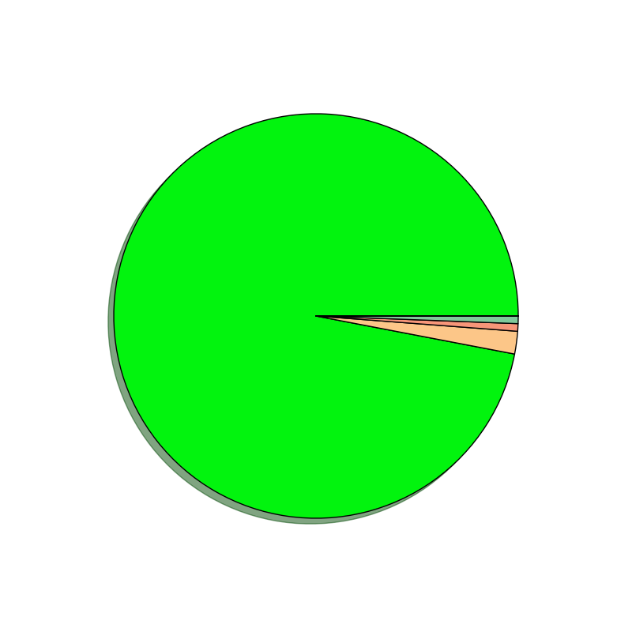 | | | ENVO:creek (96.99%) | | | ENVO:freshwater lake (1.81%) | | | ENVO:human-associated habitat (0.60%) | | | ENVO:ocean (0.60%) | | | ENVO:forest soil (0.00%) | | | ENVO:oil contaminated soil (0.00%) | | | ENVO:surface soil (0.00%) | | | ENVO:tundra (0.00%) |
|
|
| 3 | >emp.isme14..2.CleanUp.ReferenceOTU80819
TACGTAAAAGACTAGTGTTATTCATCTTTATTGGGTTTAA
AGGGTACCTAAACTGTATTATTAGCCCATATTAGGGTACA
ATATTGCTAGAGTTTTATAA | AY544746.1 (89.8% sim.) |  | | | ENVO:taiga (59.67%) | | | ENVO:forest soil (38.69%) | | | ENVO:forest (1.36%) | | | ENVO:grassland (0.27%) | | | ENVO:oil contaminated soil (0.00%) | | | ENVO:surface soil (0.00%) | | | ENVO:tundra (0.00%) | | | ENVO:dry stream (0.00%) |
|
|
| 4 | >emp.isme14..0.CleanUp.ReferenceOTU98622
TACGTAAAAGACTAGTGTTATTCATCTTTATTGGGTTTAA
AGGGTACCTAAACCGCATTATTAGCCCATATTAGGGTACG
ATATTGCTAGAGTTTTTTAA | AY544746.1 (91.67% sim.) | | 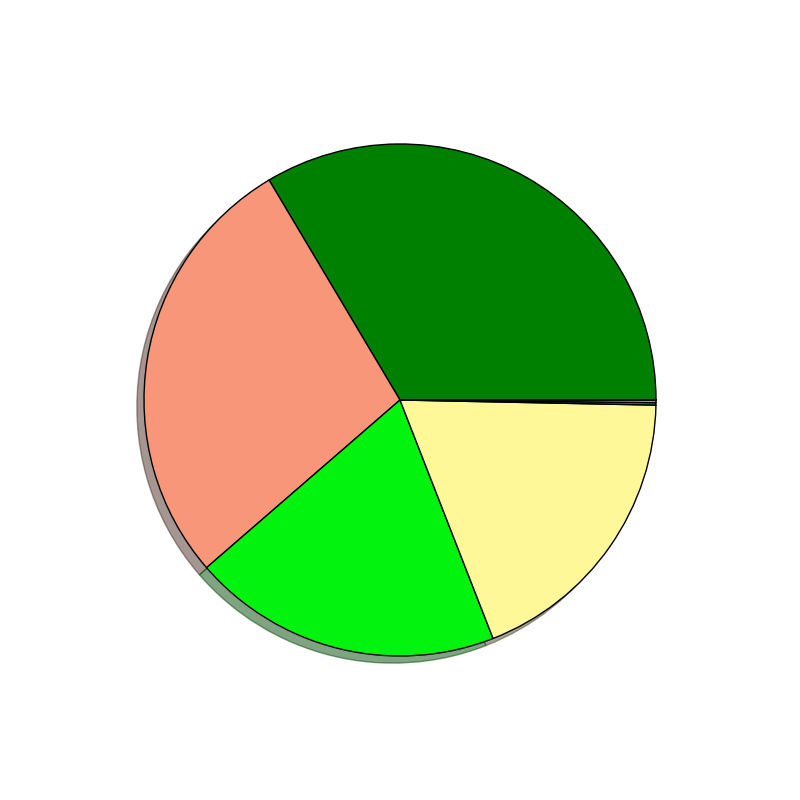 | | | ENVO:tundra (33.55%) | | | ENVO:luvisol (27.82%) | | | ENVO:podzol (19.55%) | | | ENVO:taiga (18.76%) | | | ENVO:grassland (0.16%) | | | ENVO:forest (0.16%) | | | ENVO:forest soil (0.00%) | | | ENVO:oil contaminated soil (0.00%) |
|
|
| 5 | >emp.isme14..3.CleanUp.ReferenceOTU47921
AACGGAGGGGGCTAGTGTTACTCAACTTGACTGGGCGTAA
AGGGCGTGAAGGTGGTATAATGCGTTTCTTTTTAAAAACT
CAAACTTAATTTGAGGCTAT | GU828005.1 (91.67% sim.) |  | | | ENVO:lake shore (46.55%) | | | ENVO:rocky desert (25.86%) | | | ENVO:carcass (18.97%) | | | ENVO:dry stream (6.90%) | | | ENVO:alluvial fan (1.72%) | | | ENVO:forest soil (0.00%) | | | ENVO:oil contaminated soil (0.00%) | | | ENVO:surface soil (0.00%) |
|
|
| 6 | >emp.isme14..0.CleanUp.ReferenceOTU3367
TACGTAGAAGACTAGTGTTATTCATCTTTAGTAGGTTTAA
AGGGTACCTAGACGGTAAAATTAATCTTTAGGATATGTTT
TTACTAGAGTTATATGTGAA | JN204424.1 (91.84% sim.) | | 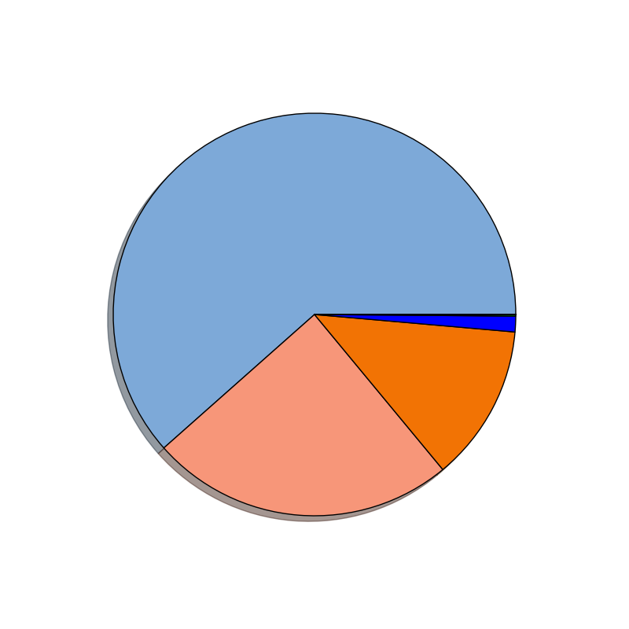 | | | ENVO:Forest soil (61.54%) | | | ENVO:luvisol (24.46%) | | | ENVO:surface soil (12.61%) | | | ENVO:oil contaminated soil (1.26%) | | | ENVO:podzol (0.13%) | | | ENVO:forest soil (0.00%) | | | ENVO:tundra (0.00%) | | | ENVO:dry stream (0.00%) |
|
|
| 7 | >emp.isme14..12.CleanUp.ReferenceOTU19612
TACGAGAGGGGCTAGTGTTATTCGAAATTACTGGGCGTAA
AGGGTAAGTAGGTTGTTTATTAAGTTGTAGGTTAAAGCCC
AAAGCTTAACTTTGGTATAGTCTACAAAACTGTTAAACTA
GAATTAAATAGAGGATAGTGGAATTTCTAA | FJ041536.1 (91.84% sim.) | | 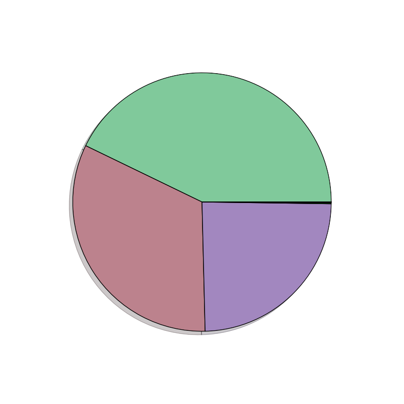 | | | ENVO:ocean (42.83%) | | | ENVO:fjord (32.56%) | | | ENVO:cold temperature habitat (24.39%) | | | ENVO:creek (0.11%) | | | ENVO:human-associated habitat (0.11%) | | | ENVO:forest soil (0.00%) | | | ENVO:oil contaminated soil (0.00%) | | | ENVO:surface soil (0.00%) |
|
|
| 8 | >emp.isme14..7.CleanUp.ReferenceOTU102045
TACGGGGGGGGCTAGCGTTATTCGGAATGATTGGGCGTAA
AGGGTCCGTAGGCAGCTTTTTAAGTCAGTTCTATAACTTT
GTGGGCTTAACCCGAAAAGT | FJ809201.1 (92.41% sim.) | | 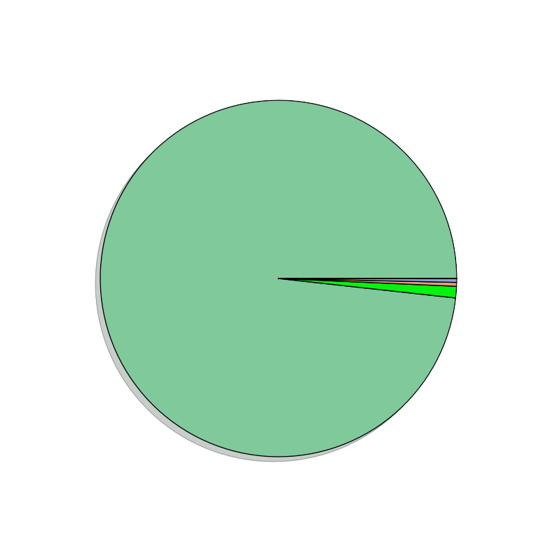 | | | ENVO:ocean (98.26%) | | | ENVO:creek (1.05%) | | | ENVO:human-associated habitat (0.35%) | | | ENVO:river (0.35%) | | | ENVO:forest soil (0.00%) | | | ENVO:oil contaminated soil (0.00%) | | | ENVO:surface soil (0.00%) | | | ENVO:tundra (0.00%) |
|
|
| 9 | >emp.isme14..14.CleanUp.ReferenceOTU356582
TACGTAGAAGACAAGTGTTATTCATCTTTAACAGGTTTAA
AGGGTACCTAGACTGGAAATCAAGCCATAGGAGGGACTAA
TTTCCTAGAGTTTTATGTGAGAAGAGTCGAACTACCTAAG
TAGCGATAAAATGCGATGATAAAGGTGAGA | FJ225754.1 (92.52% sim.) | | 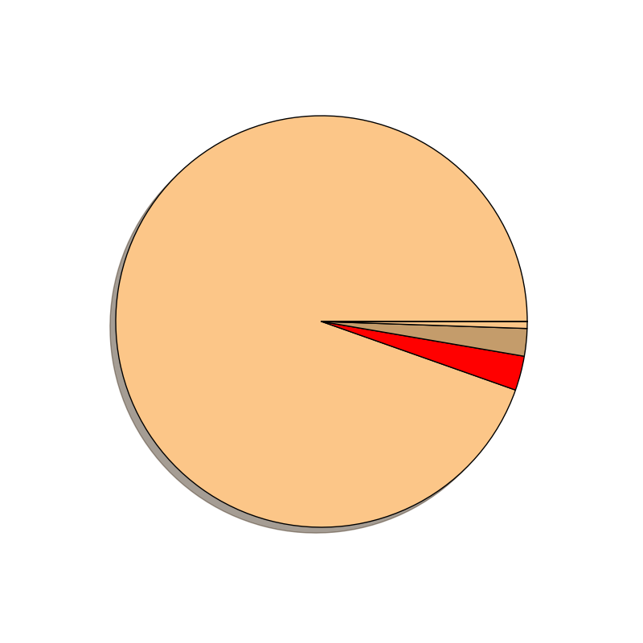 | | | ENVO:shrubland (94.59%) | | | ENVO:forest soil (2.70%) | | | ENVO:grassland soil (2.16%) | | | ENVO:freshwater lake (0.54%) | | | ENVO:oil contaminated soil (0.00%) | | | ENVO:surface soil (0.00%) | | | ENVO:tundra (0.00%) | | | ENVO:dry stream (0.00%) |
|
|
| 10 | >emp.isme14..3.CleanUp.ReferenceOTU109157
TACGAAGGGGGCAAGCGTTATCCAAAATGATTGGGCGTAA
AGTGTTCGTAGGCGGTATTTGTTGTTGTATGTAAAATGTT
AGGTTTGTTACTTAACCTCG | EU741311.1 (92.63% sim.) | | 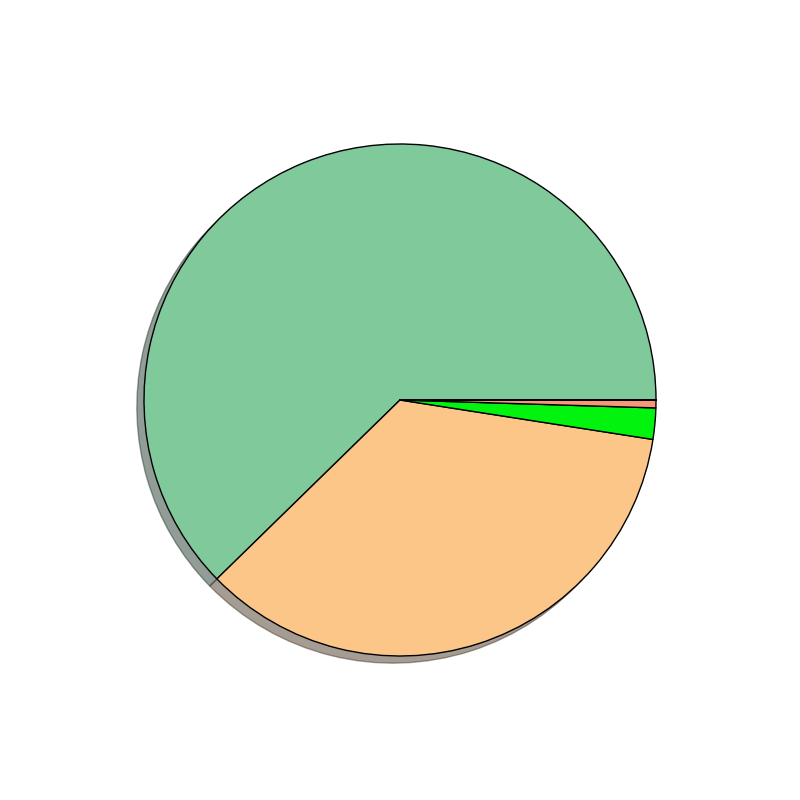 | | | ENVO:ocean (62.32%) | | | ENVO:freshwater lake (35.22%) | | | ENVO:creek (1.97%) | | | ENVO:human-associated habitat (0.49%) | | | ENVO:forest soil (0.00%) | | | ENVO:oil contaminated soil (0.00%) | | | ENVO:surface soil (0.00%) | | | ENVO:tundra (0.00%) |
|
|
| 11 | >emp.isme14..7.CleanUp.ReferenceOTU139238
TACGTATGAGACTAGTGTTATTCATCTTAAATAGGTTTAA
AGGGTACTTAGACGGCAAAATTCGCCAGATAAAGGTACGA
TTTTGCTAGAGTTTTAATGT | FJ190637.1 (92.71% sim.) | | 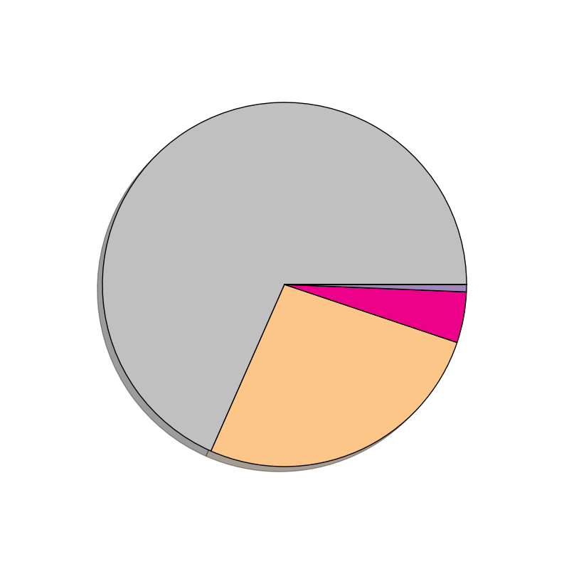 | | | ENVO:cove (68.39%) | | | ENVO:freshwater lake (26.45%) | | | ENVO:lagoon (4.52%) | | | ENVO:Bay (0.65%) | | | ENVO:forest soil (0.00%) | | | ENVO:oil contaminated soil (0.00%) | | | ENVO:surface soil (0.00%) | | | ENVO:tundra (0.00%) |
|
|
| 12 | >emp.isme14..0.CleanUp.ReferenceOTU24269
TACGTAAAAGACTAGTGTTATTCATCTTTAGTAGGTTTAA
AGGGTACCTAGACGGTATTACTAGCCCAAAACAGGGTACG
GTATTACTAGAGGTTTATAT | HM143835.1 (93.0% sim.) | | 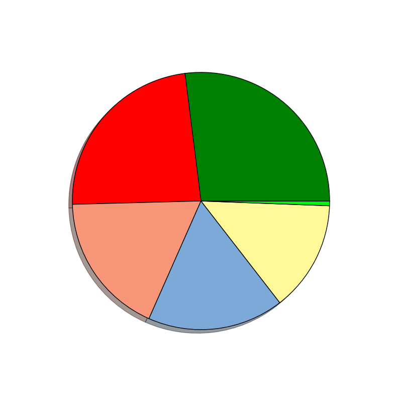 | | | ENVO:tundra (26.99%) | | | ENVO:forest soil (23.42%) | | | ENVO:luvisol (17.95%) | | | ENVO:Forest soil (17.12%) | | | ENVO:taiga (13.91%) | | | ENVO:podzol (0.59%) | | | ENVO:oil contaminated soil (0.00%) | | | ENVO:surface soil (0.00%) |
|
|
| 13 | >emp.isme14..2.CleanUp.ReferenceOTU26944
TACGTAAAAGACTAGTGTTATTCATCTTTAATAGGTTTAC
AGGGTACCTAGACGGTAAATTTAATCTTAAACAAGATATG
TTTTTACTAGAGTTTTATAT | EU940239.1 (93.07% sim.) | | 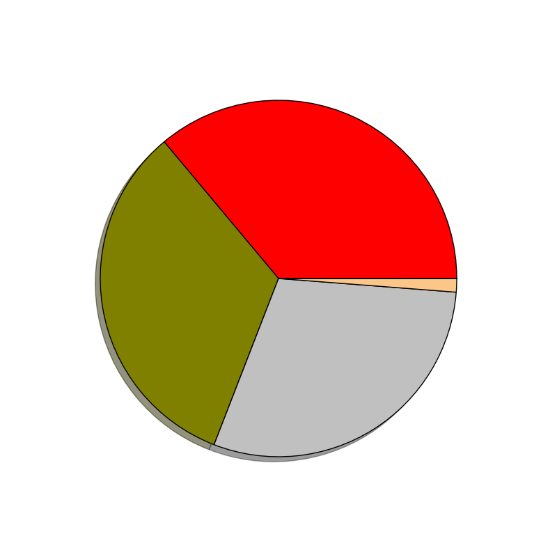 | | | ENVO:forest soil (36.09%) | | | ENVO:tropical soil (33.03%) | | | ENVO:cove (29.66%) | | | ENVO:freshwater lake (1.22%) | | | ENVO:oil contaminated soil (0.00%) | | | ENVO:surface soil (0.00%) | | | ENVO:tundra (0.00%) | | | ENVO:dry stream (0.00%) |
|
|
| 14 | >emp.isme14..1.CleanUp.ReferenceOTU48723
TACGGGGGGGGCAAGCGTTATTCTACGTTACTGGGTGTAA
AAAGTATTAAGACGGTTTAATAAGTTTCTTTTGAAAGCCT
AGACTTCAATTCTAGAATTA | AY712337.1 (93.44% sim.) | | 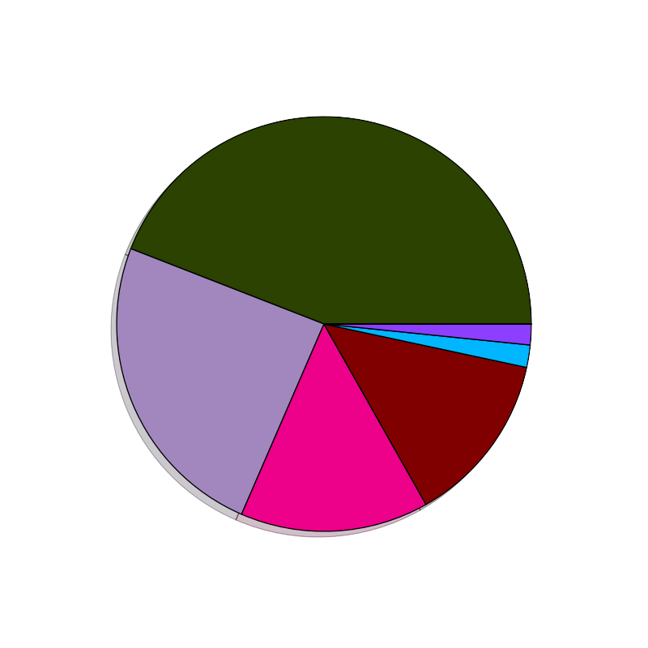 | | | ENVO:canyon (44.08%) | | | ENVO:cold temperature habitat (24.41%) | | | ENVO:stromatolite mat (14.69%) | | | ENVO:animal-associated habitat (13.45%) | | | ENVO:rock (1.74%) | | | ENVO:stream (1.62%) | | | ENVO:forest soil (0.00%) | | | ENVO:oil contaminated soil (0.00%) |
|
|
| 15 | >emp.isme14..22.CleanUp.ReferenceOTU542667
TACTAGCGGTCCAAGTCGCAGCCATTTTTATTGGGTCTAA
AACATCCGTAGCTTGCTTAGTAAGTCCTTTGTGAAATCTT
ACATCTTAAATGTAAGGCGTGCAAGGGGTACTGCTAAGCT
AGAGACTGGAAGACGTAAGAAGTACGATAA | AB702046.1 (93.48% sim.) | | 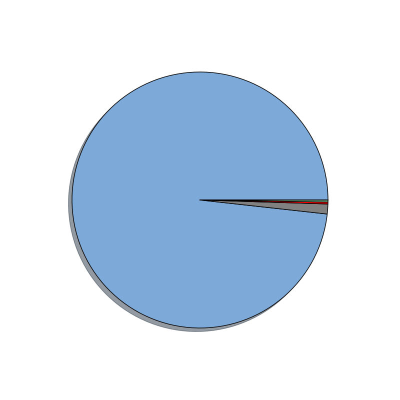 | | | ENVO:river (98.25%) | | | NA (1.25%) | | | ENVO:forest soil (0.25%) | | | ENVO:ocean (0.25%) | | | ENVO:oil contaminated soil (0.00%) | | | ENVO:surface soil (0.00%) | | | ENVO:tundra (0.00%) | | | ENVO:dry stream (0.00%) |
|
|
| 16 | >emp.isme14..7.CleanUp.ReferenceOTU148633
AACGAGGGGGACGAGCGTTATTCGTCATTACTGGGCGTAA
AAGGTTCGTAGACGGTAAAGTAAGTTTCTTGTTAAAGATT
AAAGCCTAACTTTTAAACAG | FN663004.1 (94.0% sim.) | | 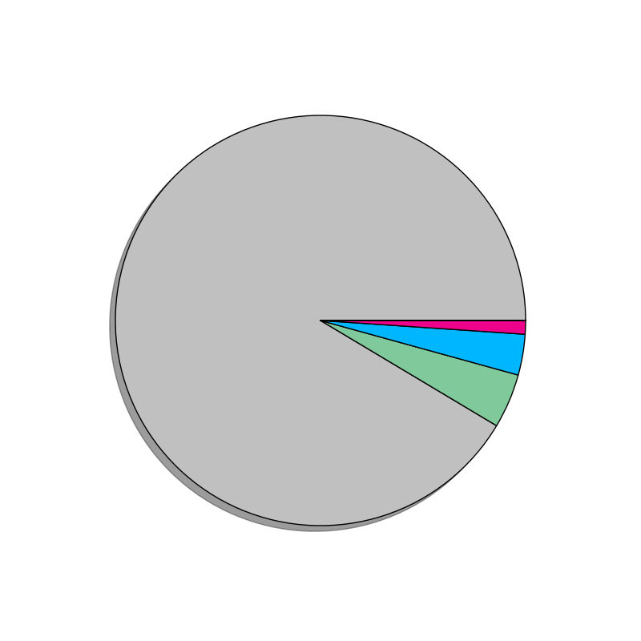 | | | ENVO:cove (91.43%) | | | ENVO:estuary (4.29%) | | | ENVO:coastal water (3.21%) | | | ENVO:lagoon (1.07%) | | | ENVO:forest soil (0.00%) | | | ENVO:oil contaminated soil (0.00%) | | | ENVO:surface soil (0.00%) | | | ENVO:tundra (0.00%) |
|
|
| 17 | >emp.isme14..0.CleanUp.ReferenceOTU19982
TACATGAAAGACTAGTGTTATTCATCTTTAATAGGTTTAA
AGGGTACCTAGACGGTAAATATAGCCTAAAAAAGGGACAT
ATATACTAGAGTTTTATTAG | EU982570.1 (94.19% sim.) | | 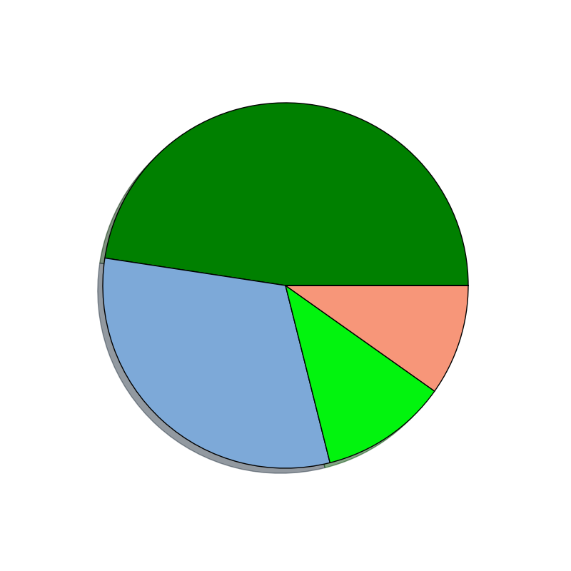 | | | ENVO:tundra (47.60%) | | | ENVO:Forest soil (31.32%) | | | ENVO:podzol (11.27%) | | | ENVO:luvisol (9.81%) | | | ENVO:forest soil (0.00%) | | | ENVO:oil contaminated soil (0.00%) | | | ENVO:surface soil (0.00%) | | | ENVO:dry stream (0.00%) |
|
|
| 18 | >emp.isme14..0.CleanUp.ReferenceOTU30203
TACGGGGAGGGCAAGCGTTATTCTACGTTACTGGGTGTAA
AAAGTATTAAGGCGGTTTAATAAGTTTCTTTTGAAAGAAT
AGAATTCAATTCTAGAATTG | AY712337.1 (94.44% sim.) | | 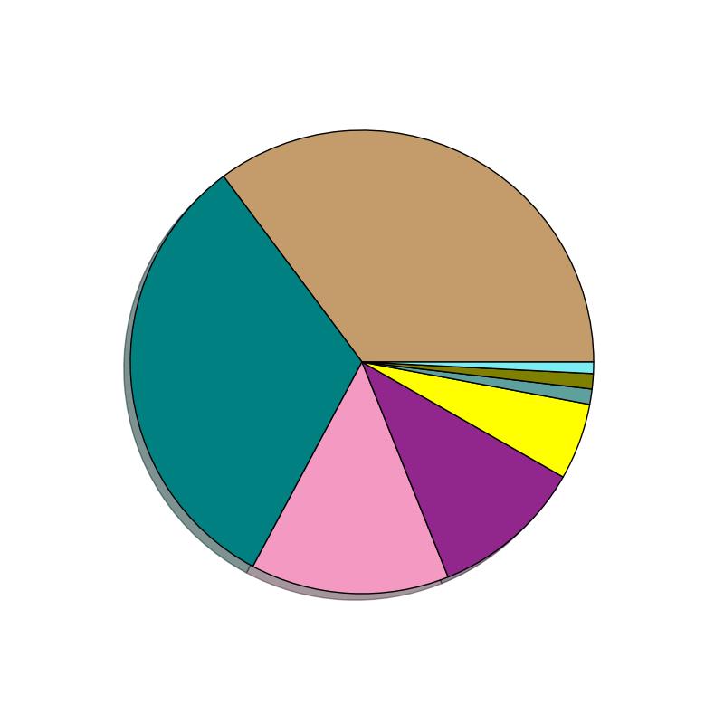 | | | ENVO:grassland soil (35.20%) | | | ENVO:grassland (32.00%) | | | ENVO:rocky desert (13.87%) | | | ENVO:dry stream (10.67%) | | | ENVO:alluvial fan (5.33%) | | | ENVO:carcass (1.07%) | | | ENVO:tropical soil (1.07%) | | | ENVO:lake shore (0.80%) |
|
|
| 19 | >emp.isme14..2.CleanUp.ReferenceOTU20204
TACGGGGGGGACAAGTGTTACTCGGAATGATTAGGCGTAA
AGGGTCCTTTAAGCGGTTTATCAAGTTAAAAGTTTTCCCA
TAAGGGCCCAACCTTTATGT | GU235623.1 (94.74% sim.) | | 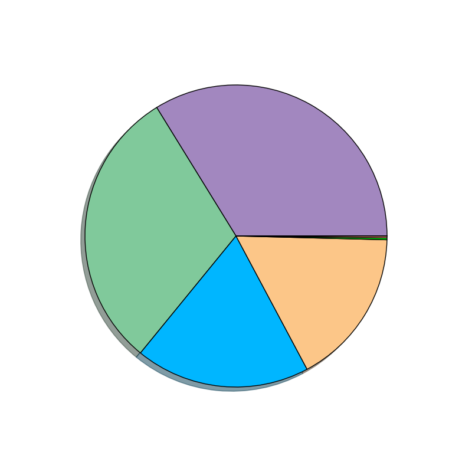 | | | ENVO:cold temperature habitat (33.80%) | | | ENVO:ocean (30.30%) | | | ENVO:coastal water (18.70%) | | | ENVO:freshwater lake (16.80%) | | | ENVO:creek (0.20%) | | | ENVO:human-associated habitat (0.20%) | | | ENVO:forest soil (0.00%) | | | ENVO:oil contaminated soil (0.00%) |
|
|
| 20 | >emp.isme14..7.CleanUp.ReferenceOTU41955
TACATGAGAGGTAAACGTTCATCATCTTAAATGGGTCTAA
AGGGTTCGTAGATGGCTTAGTGTGATACCTATTTTAACTA
ATAAGCTAGAGTTTAATAAA | DQ496173.1 (94.87% sim.) | | 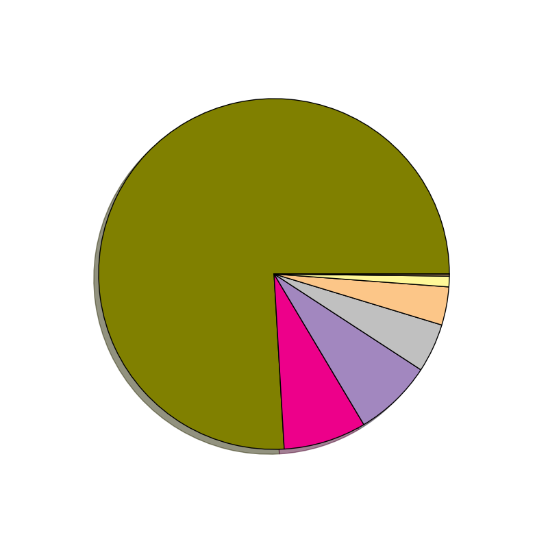 | | | ENVO:tropical soil (75.93%) | | | ENVO:lagoon (7.63%) | | | ENVO:Bay (7.24%) | | | ENVO:cove (4.50%) | | | ENVO:freshwater lake (3.52%) | | | ENVO:sea beach (0.98%) | | | ENVO:grassland soil (0.20%) | | | ENVO:forest soil (0.00%) |
|
|
| 21 | >emp.isme14..0.CleanUp.ReferenceOTU33186
TACGTAGAAGACTAGTGTTATTCATCTTTAGTAGGTTTAA
AGGGTACCTAGACGGTAAAATTAATCTTAAACAGGATATG
TTTTTACTAGAGTTATATGT | EU940271.1 (94.9% sim.) | | 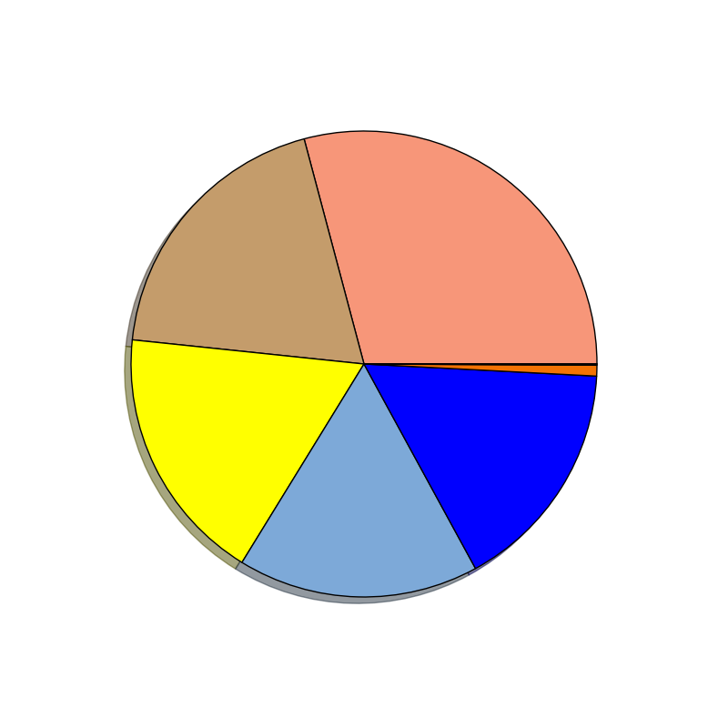 | | | ENVO:luvisol (29.14%) | | | ENVO:grassland soil (19.21%) | | | ENVO:pasture (17.88%) | | | ENVO:Forest soil (16.72%) | | | ENVO:oil contaminated soil (16.23%) | | | ENVO:surface soil (0.75%) | | | ENVO:podzol (0.08%) | | | ENVO:forest soil (0.00%) |
|
|
| 22 | >emp.isme14..7.CleanUp.ReferenceOTU215733
TACAGGAGGAGCAAGTGTTATTCAGAATTATTGGGCGTAA
AGGGCATGTAGGTGGATAGTTGTTGTTGATTGTGCCATTC
CAATTGTTAGCATTGGGTTT | CR954200.2 (94.95% sim.) | | | | ENVO:ocean (98.95%) | | | ENVO:creek (0.52%) | | | ENVO:forest soil (0.26%) | | | ENVO:grassland soil (0.26%) | | | ENVO:oil contaminated soil (0.00%) | | | ENVO:surface soil (0.00%) | | | ENVO:tundra (0.00%) | | | ENVO:dry stream (0.00%) |
|
|
| 23 | >emp.isme14.r3..1.CleanUp.ReferenceOTU3477
TACCAGCAGTTCAAGTTGCATCCATTTTTATTGGGTCTAA
AACATCCGTAGCTTGACTTTTCAGTCTCTCGTGAAATCCC
ACGTCTCAAGCGTGGCGAAG | JF835199.1 (95.0% sim.) | | 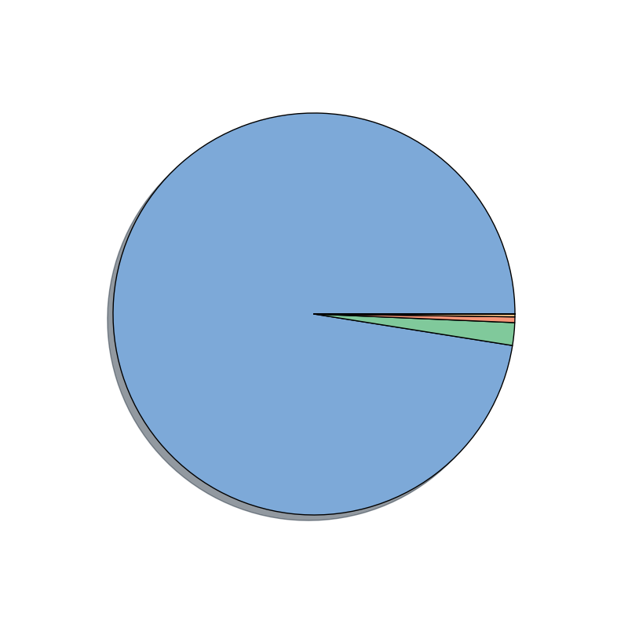 | | | ENVO:river (97.49%) | | | ENVO:ocean (1.82%) | | | ENVO:human-associated habitat (0.46%) | | | ENVO:freshwater lake (0.23%) | | | ENVO:forest soil (0.00%) | | | ENVO:oil contaminated soil (0.00%) | | | ENVO:surface soil (0.00%) | | | ENVO:tundra (0.00%) |
|
|
| 24 | >emp.isme14.r3..1.ReferenceOTU641
GACAAGGAAGACTAGTGTTATTCATCTTTATTAGGTATAT
AGGGTACCTAGACAGTTTATCAGGCCTTAAAAAGGAAC | AY818583.1 (95.16% sim.) | | | | ENVO:forest soil (97.56%) | | | ENVO:grassland soil (1.22%) | | | NA (0.98%) | | | ENVO:human-associated habitat (0.24%) | | | ENVO:oil contaminated soil (0.00%) | | | ENVO:surface soil (0.00%) | | | ENVO:tundra (0.00%) | | | ENVO:dry stream (0.00%) |
|
|
| 25 | >emp.isme14.r3..1.CleanUp.ReferenceOTU333371
GACAGGAGGAGCAAGCGTTATTCAGAATTATTGGGCGTAA
AGGGCATGTAGGCGGATGATTGGAGTTGATTGTGCCATTC
CAATGGGATGCATTGGG | CR954200.2 (95.24% sim.) | | 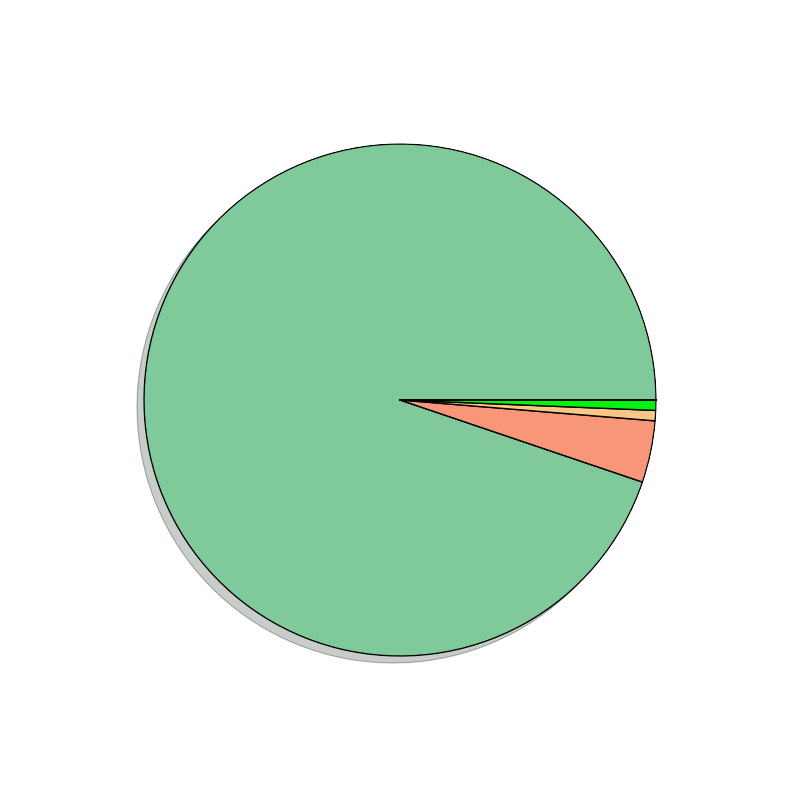 | | | ENVO:ocean (94.81%) | | | ENVO:human-associated habitat (3.90%) | | | ENVO:freshwater lake (0.65%) | | | ENVO:creek (0.65%) | | | ENVO:forest soil (0.00%) | | | ENVO:oil contaminated soil (0.00%) | | | ENVO:surface soil (0.00%) | | | ENVO:tundra (0.00%) |
|
|
| 26 | >emp.isme14..1.CleanUp.ReferenceOTU31919
TACGGGTAGCGCTAGTGTTATTCCTCTTGATTGGGCGTAA
AGGGTGTGTAGGTGGTATAATAAGTTGGAAATGAAAAACT
ATGCTGATCAATTGTATATT | AY897693.2 (95.29% sim.) | | 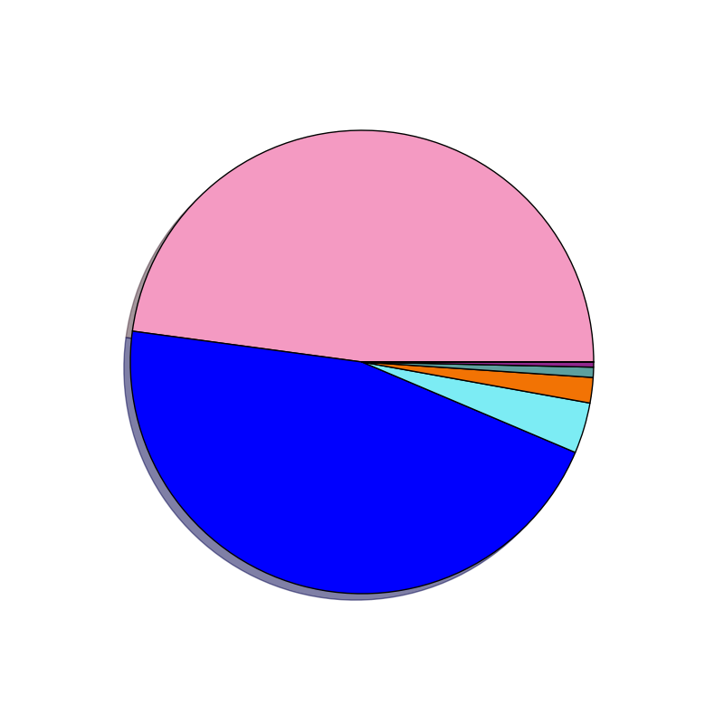 | | | ENVO:rocky desert (47.87%) | | | ENVO:oil contaminated soil (45.74%) | | | ENVO:lake shore (3.55%) | | | ENVO:surface soil (1.77%) | | | ENVO:carcass (0.71%) | | | ENVO:dry stream (0.35%) | | | ENVO:forest soil (0.00%) | | | ENVO:tundra (0.00%) |
|
|
| 27 | >emp.isme14..21.CleanUp.ReferenceOTU4680
CACGAGGGGTGCAAGCGTTGTTCGGAATTACTGGGCGTAA
AGAGTTCGTAGGCGGGAAACCAAGTCAGGTGTTTAAAGCG
GGGGCCTAACCCCCGTTCGGCACTTGAAACTGGTTTTCTT
GAGTAGGTCAGAGGTTAACGGAATTCCTAG | GQ413645.1 (95.33% sim.) | | 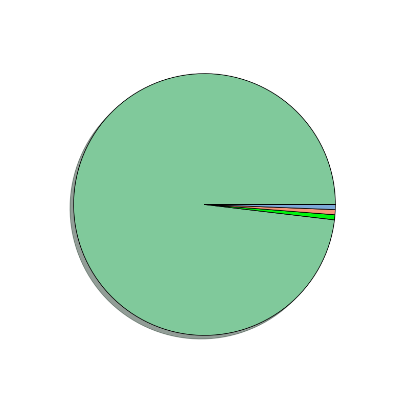 | | | ENVO:ocean (98.12%) | | | ENVO:creek (0.62%) | | | ENVO:human-associated habitat (0.62%) | | | ENVO:river (0.62%) | | | ENVO:forest soil (0.00%) | | | ENVO:oil contaminated soil (0.00%) | | | ENVO:surface soil (0.00%) | | | ENVO:tundra (0.00%) |
|
|
| 28 | >emp.isme14..7.CleanUp.ReferenceOTU117015
TACAGAAGGAGCGAGTGTTATTCGGAATAATTGGGCGTAA
AGGGCGTGTAGGCTGTTGTTCGCTGTTGTTTGTGAAATTC
CAAAGCTCACCTTTGGCGGG | AY580836.1 (95.35% sim.) | | 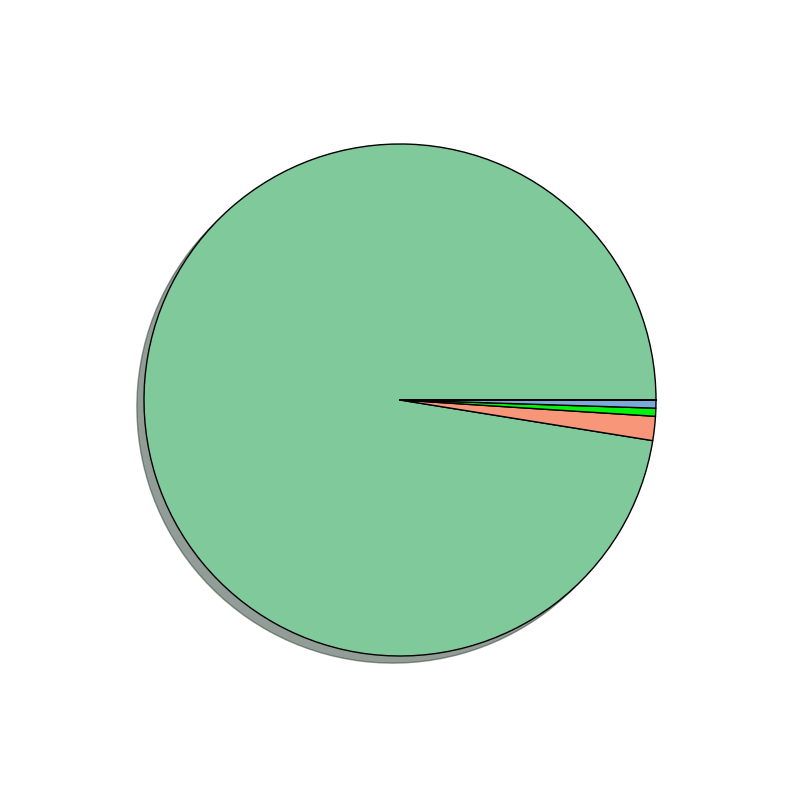 | | | ENVO:ocean (97.46%) | | | ENVO:human-associated habitat (1.52%) | | | ENVO:creek (0.51%) | | | ENVO:river (0.51%) | | | ENVO:forest soil (0.00%) | | | ENVO:oil contaminated soil (0.00%) | | | ENVO:surface soil (0.00%) | | | ENVO:tundra (0.00%) |
|
|
| 29 | >emp.isme14..7.CleanUp.ReferenceOTU21896
TACTCGCGGTCCAAGTCGCAGCCATTTTTATTGGGTCTAA
AACATCCGTAGCTTGTAGGTTAAGTTTCCTGTGAAATTTT
ATCTCTTAAAGATAAA | AF146247.1 (95.7% sim.) | | 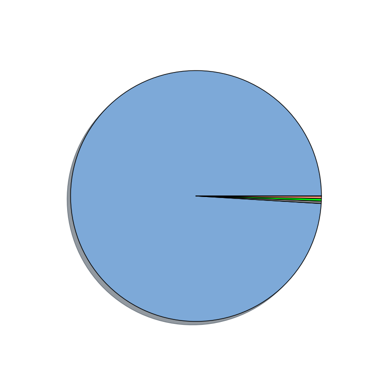 | | | ENVO:river (99.04%) | | | NA (0.32%) | | | ENVO:creek (0.32%) | | | ENVO:human-associated habitat (0.32%) | | | ENVO:forest soil (0.00%) | | | ENVO:oil contaminated soil (0.00%) | | | ENVO:surface soil (0.00%) | | | ENVO:tundra (0.00%) |
|
|
| 30 | >emp.isme14.r3..1.ReferenceOTU1268
TACCAGCAGTTCAAGTTGCATCCACTTTTATTGGGTCTAA
AACATCCGTAGCTTGCTACTTAAGTCTCTTGTGAAATCCT
ACGTCTCAAGCGTG | EU181722.1 (95.74% sim.) | | 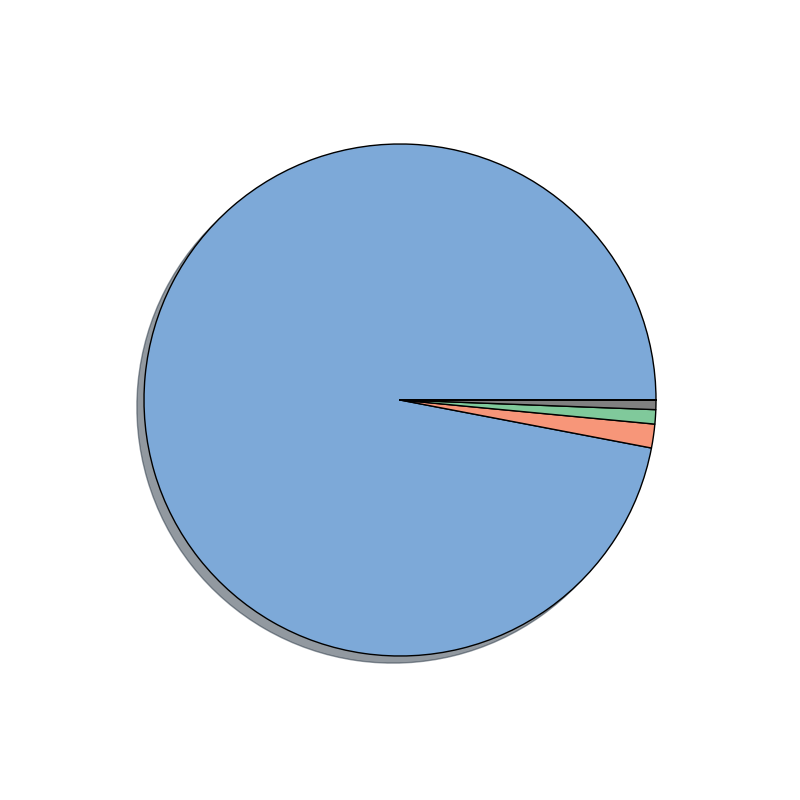 | | | ENVO:river (97.00%) | | | ENVO:human-associated habitat (1.50%) | | | ENVO:ocean (0.90%) | | | NA (0.60%) | | | ENVO:forest soil (0.00%) | | | ENVO:oil contaminated soil (0.00%) | | | ENVO:surface soil (0.00%) | | | ENVO:tundra (0.00%) |
|
|
| 31 | >emp.isme14..0.CleanUp.ReferenceOTU51951
CACGTAGAAGACTAGTGTTACTCATCTTTAATGGGTTTAA
AGGGTACCTAGACGGAAAATCAAGCCTTAATAGGAACTAA
TTTTCTAGAGTTTTATGTGG | FJ225735.1 (95.79% sim.) | | 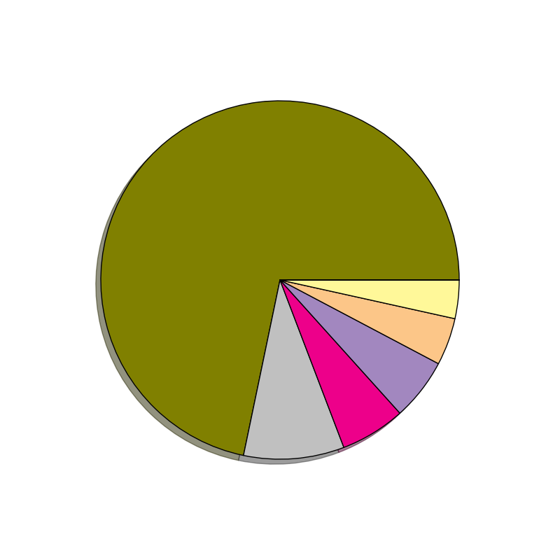 | | | ENVO:tropical soil (71.73%) | | | ENVO:cove (9.07%) | | | ENVO:lagoon (5.87%) | | | ENVO:Bay (5.60%) | | | ENVO:freshwater lake (4.27%) | | | ENVO:sea beach (3.47%) | | | ENVO:forest soil (0.00%) | | | ENVO:oil contaminated soil (0.00%) |
|
|
| 32 | >emp.isme14..7.CleanUp.ReferenceOTU167637
AACGAGGGGGACGAGCGTTATTCATCATGACTGGGCGTAA
AGGGTTCGTAGACGGTAAAGTAAGTTTCTTGTTAAAGATT
AAAGCCTAACTTTTAAAAAG | FN663009.1 (95.88% sim.) | | 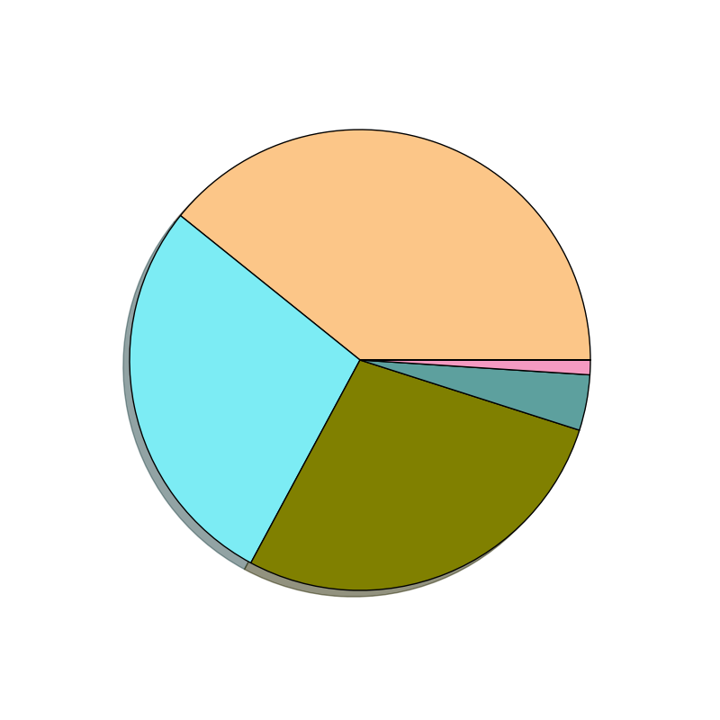 | | | ENVO:freshwater lake (39.22%) | | | ENVO:organism-associated habitat (27.93%) | | | ENVO:hot spring (27.93%) | | | ENVO:tidal pool (3.90%) | | | ENVO:intertidal zone (1.03%) | | | ENVO:forest soil (0.00%) | | | ENVO:oil contaminated soil (0.00%) | | | ENVO:surface soil (0.00%) |
|
|
| 33 | >emp.isme14..9.CleanUp.ReferenceOTU664581
TACTCGCGGTCCAAGTCGCAGCCATTTTTATTGGGTCTAA
AACATCCGTAGCTTGCTTGATAAGTTTCTTGTGAAATCTT
ACATCTTAAGTGTAGGGCGT | FJ354265.1 (95.96% sim.) | | 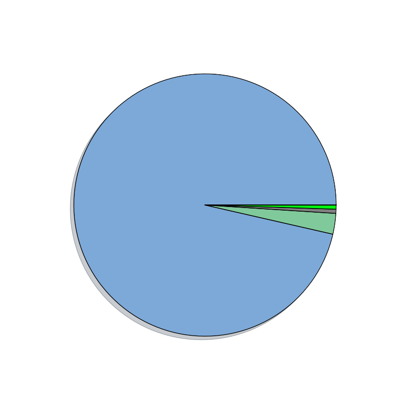 | | | ENVO:river (96.43%) | | | ENVO:ocean (2.55%) | | | NA (0.51%) | | | ENVO:creek (0.51%) | | | ENVO:forest soil (0.00%) | | | ENVO:oil contaminated soil (0.00%) | | | ENVO:surface soil (0.00%) | | | ENVO:tundra (0.00%) |
|
|
| 34 | >emp.isme14..0.ReferenceOTU134
TACGTAGAAGACTAGTGTTATTCATCTTTAGTAGGTTTAA
AGGGTACCTAGACGGTATGATTAGTCTTAGACAGGATACG
ATTATACTAGAGGTATATAT | JN031566.1 (96.0% sim.) |  | | | ENVO:Forest soil (33.90%) | | | ENVO:permafrost (25.88%) | | | ENVO:forest soil (23.09%) | | | ENVO:taiga (16.04%) | | | ENVO:forest (0.61%) | | | ENVO:bog (0.49%) | | | ENVO:oil contaminated soil (0.00%) | | | ENVO:surface soil (0.00%) |
|
|
| 35 | >emp.isme14..0.CleanUp.ReferenceOTU76288
TACGTAGAAGACTAGTGTTATTCATCTTTAGTAGGTTTAA
AGGGTACCTAGACGGTATAATCAGTCTTAAACAAGATACA
ATTATACTAGAGTTATATAT | EU940271.1 (96.0% sim.) | | 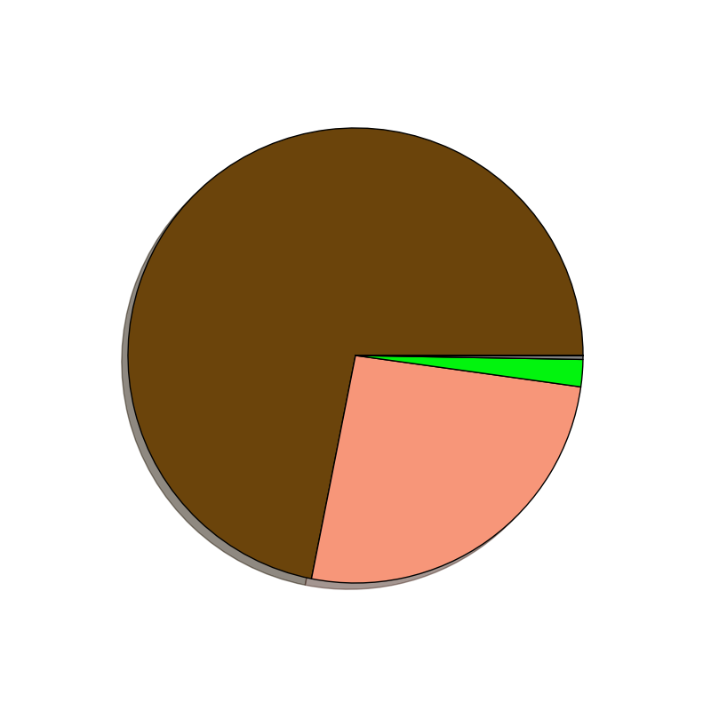 | | | ENVO:permafrost (71.90%) | | | ENVO:luvisol (25.90%) | | | ENVO:podzol (1.93%) | | | ENVO:bog (0.28%) | | | ENVO:forest soil (0.00%) | | | ENVO:oil contaminated soil (0.00%) | | | ENVO:surface soil (0.00%) | | | ENVO:tundra (0.00%) |
|
|
| 36 | >emp.isme14..0.CleanUp.ReferenceOTU92166
TACGTAAAAGACAAGTGTTATTCATCTTTAATAGGTTTAA
AGGGTACCTAGACGGTATTATTAGCCCAAAAAAGGGTACG
ATTATACTAGAGTTTTATAG | FJ190662.1 (96.0% sim.) | | 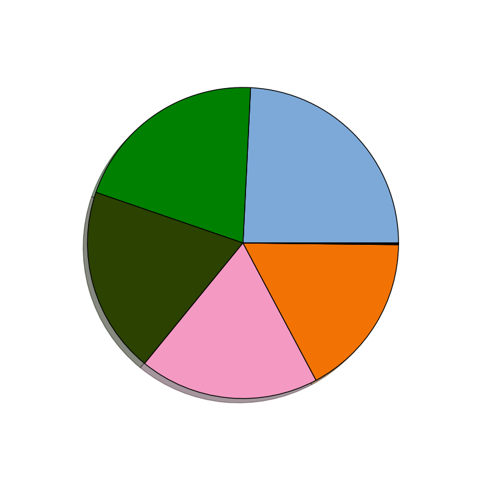 | | | ENVO:Forest soil (24.22%) | | | ENVO:tundra (20.50%) | | | ENVO:canyon (19.38%) | | | ENVO:rocky desert (18.69%) | | | ENVO:surface soil (17.04%) | | | ENVO:dry stream (0.09%) | | | ENVO:alluvial fan (0.09%) | | | ENVO:forest soil (0.00%) |
|
|
| 37 | >emp.isme14..2.CleanUp.ReferenceOTU20719
TACGTAGAAGACTAGTGTTATTCATCTTTAGTAGGTTTAA
AGGGTACCTAGACGGTAAGATTAGTCTTAAACAGGATACG
ATTTTACTAGAGTTATATAT | JN031566.1 (96.0% sim.) | | 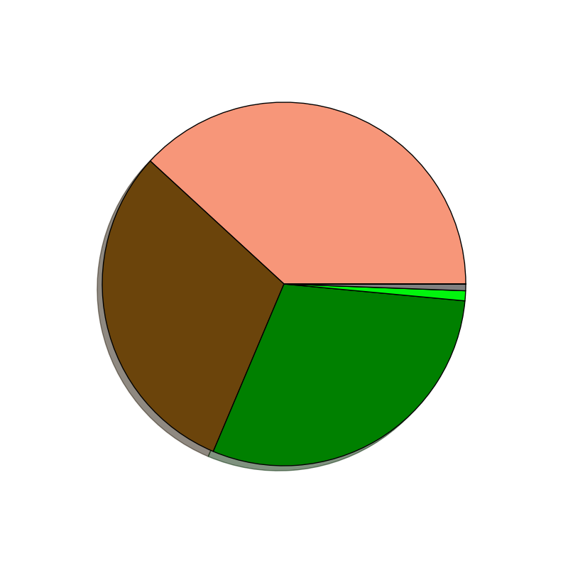 | | | ENVO:luvisol (38.17%) | | | ENVO:permafrost (30.47%) | | | ENVO:tundra (29.88%) | | | ENVO:podzol (0.89%) | | | ENVO:bog (0.59%) | | | ENVO:forest soil (0.00%) | | | ENVO:oil contaminated soil (0.00%) | | | ENVO:surface soil (0.00%) |
|
|
| 38 | >emp.isme14..11.CleanUp.ReferenceOTU4796
TACGGGGGGGGCGAGCGTTATTCGGAATGACTGGGCGTAA
AGAGTTCGTAGGCGGTTTCTTAAGTTGATTTTAAAAATTT
AGAGCATAACTCTAAAAATGGATCAAAACTGAGAAACTTG
AGTTTGGTAGAGGATAGTGGAATTCCTAGT | JQ235919.1 (96.15% sim.) | | 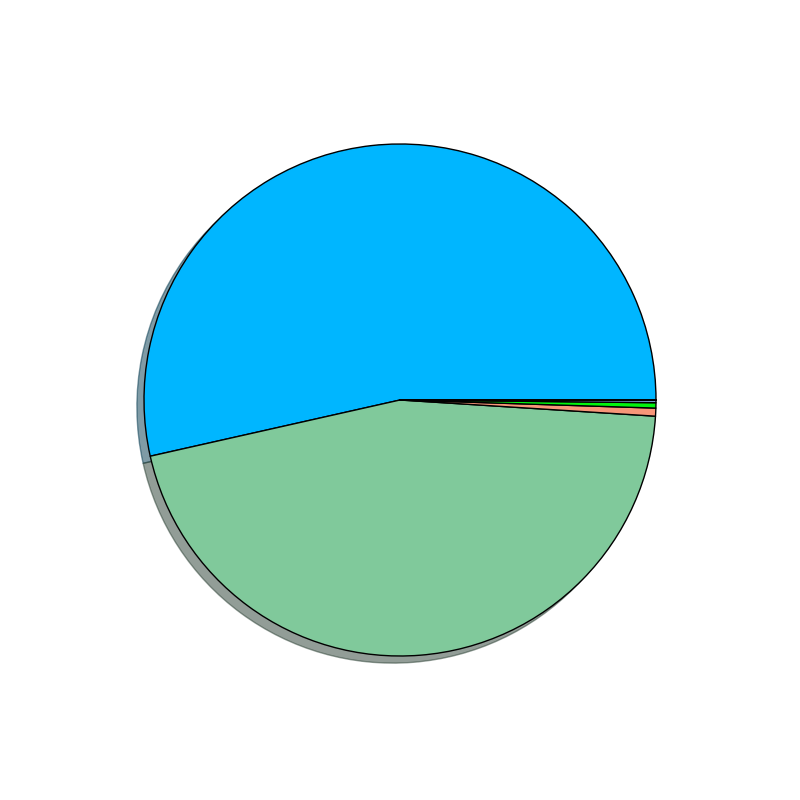 | | | ENVO:coastal water (53.52%) | | | ENVO:ocean (45.47%) | | | ENVO:human-associated habitat (0.50%) | | | ENVO:creek (0.34%) | | | ENVO:river (0.17%) | | | ENVO:forest soil (0.00%) | | | ENVO:oil contaminated soil (0.00%) | | | ENVO:surface soil (0.00%) |
|
|
| 39 | >emp.isme14..11.CleanUp.ReferenceOTU446
TACAGAAGGAGCAAGTGTTATTCGGAATAATTGGGCGTAA
AGGGCGTGTAGGTTGTTGTTTGCTGTTGTTTGTGAAACTC
CAAAGCTCACCTTTGGCGGTGCATGCAAGACGAAGCAACT
TGAGTGTGAGAGGGGAAAATAGAATTTCTA | FJ859351.1 (96.43% sim.) | | 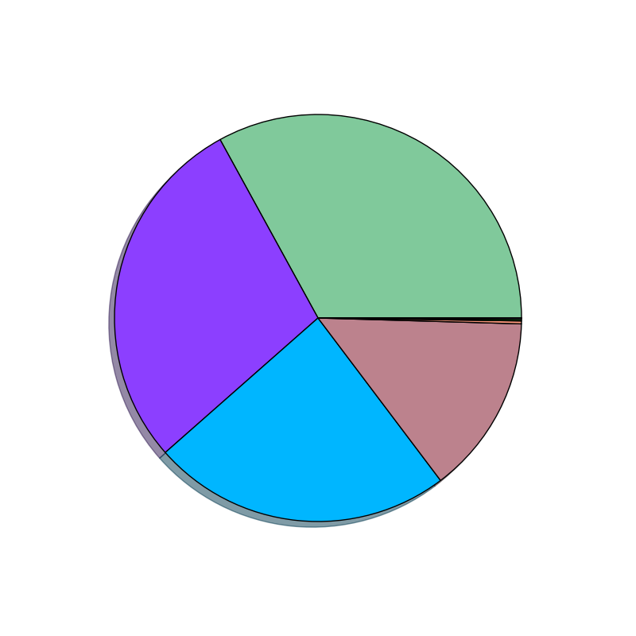 | | | ENVO:ocean (32.99%) | | | ENVO:ocean water (28.51%) | | | ENVO:coastal water (23.79%) | | | ENVO:fjord (14.25%) | | | ENVO:human-associated habitat (0.23%) | | | ENVO:creek (0.11%) | | | ENVO:river (0.11%) | | | ENVO:forest soil (0.00%) |
|
|
| 40 | >emp.isme14..7.CleanUp.ReferenceOTU110242
AACGTGAAGGATAAACGTTATTCGGAATTATTGGGCGTTA
AGGGTTCGTAGGTTGTTTTGTAGGTTAACTTTAAAAAATT
AAACATATAACTTTAA | M34416.1 (96.55% sim.) | | 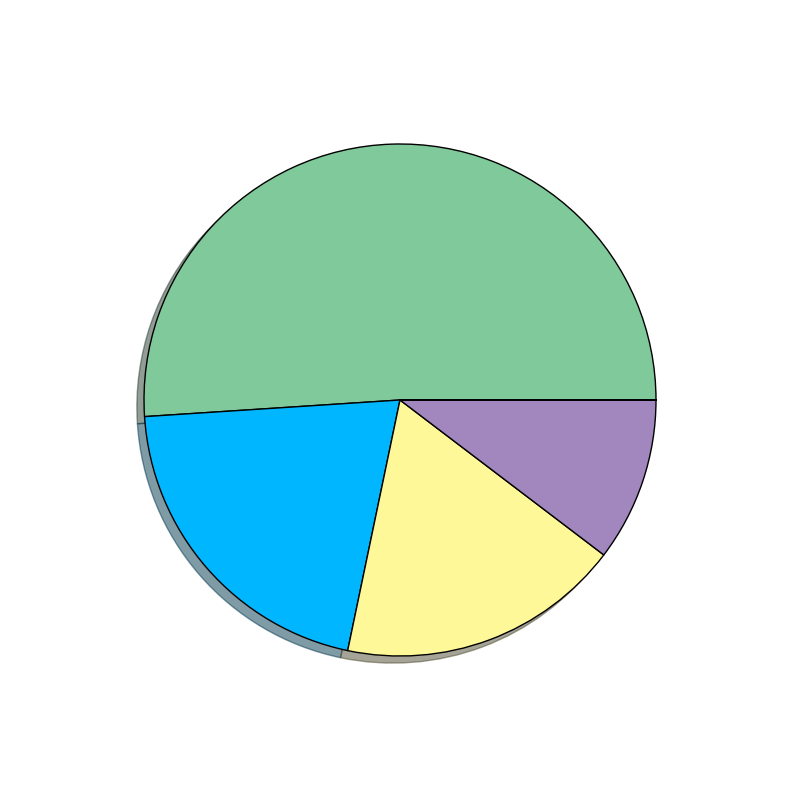 | | | ENVO:estuary (51.03%) | | | ENVO:coastal water (20.69%) | | | ENVO:sea beach (17.93%) | | | ENVO:Bay (10.34%) | | | ENVO:forest soil (0.00%) | | | ENVO:oil contaminated soil (0.00%) | | | ENVO:surface soil (0.00%) | | | ENVO:tundra (0.00%) |
|
|
| 41 | >emp.isme14..14.CleanUp.ReferenceOTU526197
AACGGAGGGAGCAATCGTTATTCGGATTTACTGGGCGTAA
AGAGCACGTAGGTGGCTTAATAGGTCATATGTTAAATCCC
CTTGCTCAACAAGGGACCAGCATGTGAAACCATTAAGCTT
GAGTGCAGGGGAGGTAGACGGAATTCCCGG | JQ792919.1 (96.67% sim.) | | | | ENVO:creek (98.43%) | | | ENVO:freshwater lake (1.05%) | | | NA (0.26%) | | | ENVO:ocean (0.26%) | | | ENVO:forest soil (0.00%) | | | ENVO:oil contaminated soil (0.00%) | | | ENVO:surface soil (0.00%) | | | ENVO:tundra (0.00%) |
|
|
| 42 | >emp.isme14..0.CleanUp.ReferenceOTU72790
TACGTAAAAGACTAGTGTTAGTCATCTTTATTAGGTTTAA
AGGGTACCTAGACGGTAAATTAAACTCTTATTGAGTATCT
TTTTACTAGAGTTTTATAAG | FJ973108.1 (96.97% sim.) | | | | ENVO:forest soil (99.53%) | | | ENVO:human-associated habitat (0.19%) | | | ENVO:grassland soil (0.09%) | | | NA (0.09%) | | | ENVO:creek (0.09%) | | | ENVO:oil contaminated soil (0.00%) | | | ENVO:surface soil (0.00%) | | | ENVO:tundra (0.00%) |
|
|
| 43 | >emp.isme14..14.CleanUp.ReferenceOTU547845
TACTAGCATCCTCGAGTGGTAGTCGCGATTATTTGGCTTA
AAGCGTCCGTAGTCGGGCCGCTTAGTCTTCTGTGAAATCC
TGCGGCTCAACCGTAGGGCTTGCAGAGGATACTGGCGGTC
TTGGAGCCGGGAG | FJ858938.1 (96.97% sim.) | | | | ENVO:creek (98.01%) | | | ENVO:freshwater lake (0.66%) | | | NA (0.66%) | | | ENVO:ocean (0.66%) | | | ENVO:forest soil (0.00%) | | | ENVO:oil contaminated soil (0.00%) | | | ENVO:surface soil (0.00%) | | | ENVO:tundra (0.00%) |
|
|
| 44 | >emp.isme14..0.CleanUp.ReferenceOTU18788
TACGAGAGGGGTTAACGTTCTTCAACATAAATGGGTCTAA
AGCGTATGTAGGTTGTATTATCAAACAGTAGTTATAAAAT
TTCAATAGAAAAATTATAAA | AY863211.1 (97.0% sim.) | | 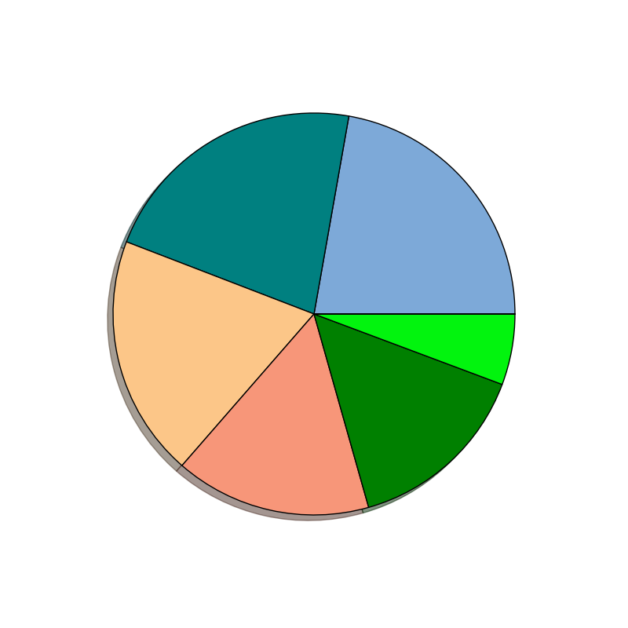 | | | ENVO:Forest soil (22.22%) | | | ENVO:grassland (21.93%) | | | ENVO:freshwater lake (19.44%) | | | ENVO:luvisol (15.79%) | | | ENVO:tundra (14.91%) | | | ENVO:podzol (5.70%) | | | ENVO:forest soil (0.00%) | | | ENVO:oil contaminated soil (0.00%) |
|
|
| 45 | >emp.isme14..9.CleanUp.ReferenceOTU393299
TACTAGCGGTCCAAGTCGCAGCCATTTTTATTGGGTCTAA
AACATCCGTAGCTTGCTTGGTAAGTTTCTTGTGAAATCTT
ATATCTTAAGTATAGGGCGT | EU731491.1 (97.0% sim.) |  | | | ENVO:river (97.97%) | | | ENVO:human-associated habitat (1.02%) | | | NA (0.68%) | | | ENVO:forest soil (0.34%) | | | ENVO:oil contaminated soil (0.00%) | | | ENVO:surface soil (0.00%) | | | ENVO:tundra (0.00%) | | | ENVO:dry stream (0.00%) |
|
|